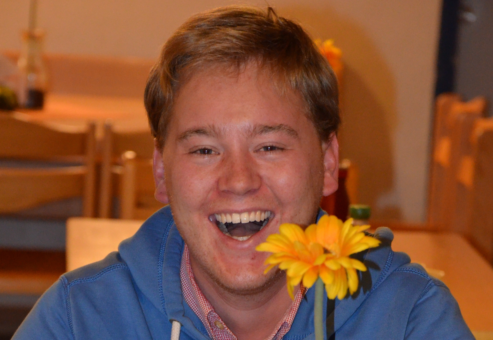
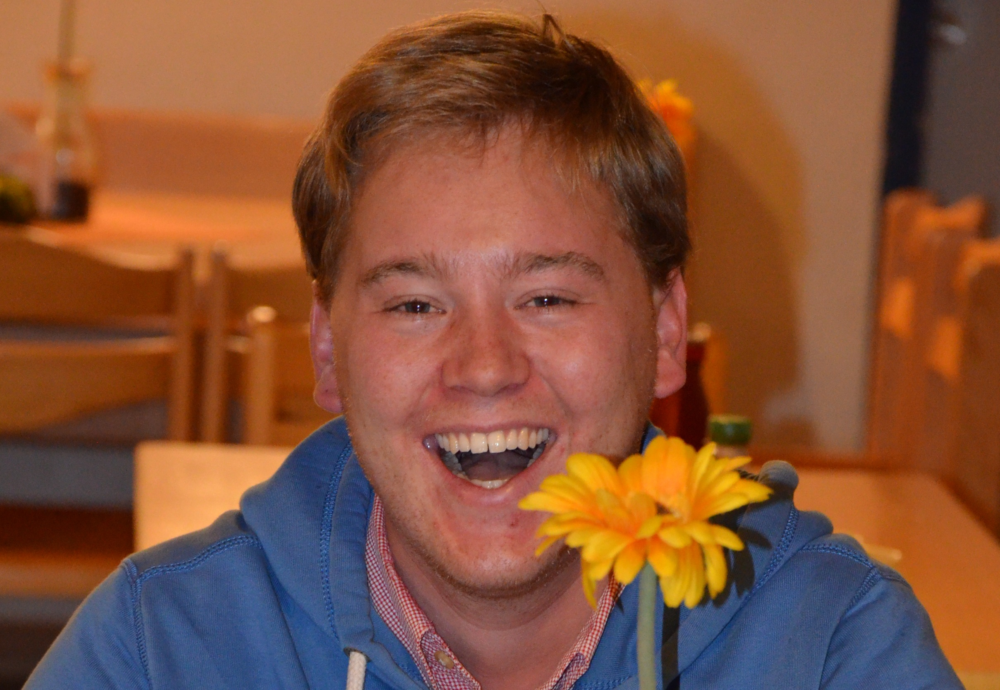
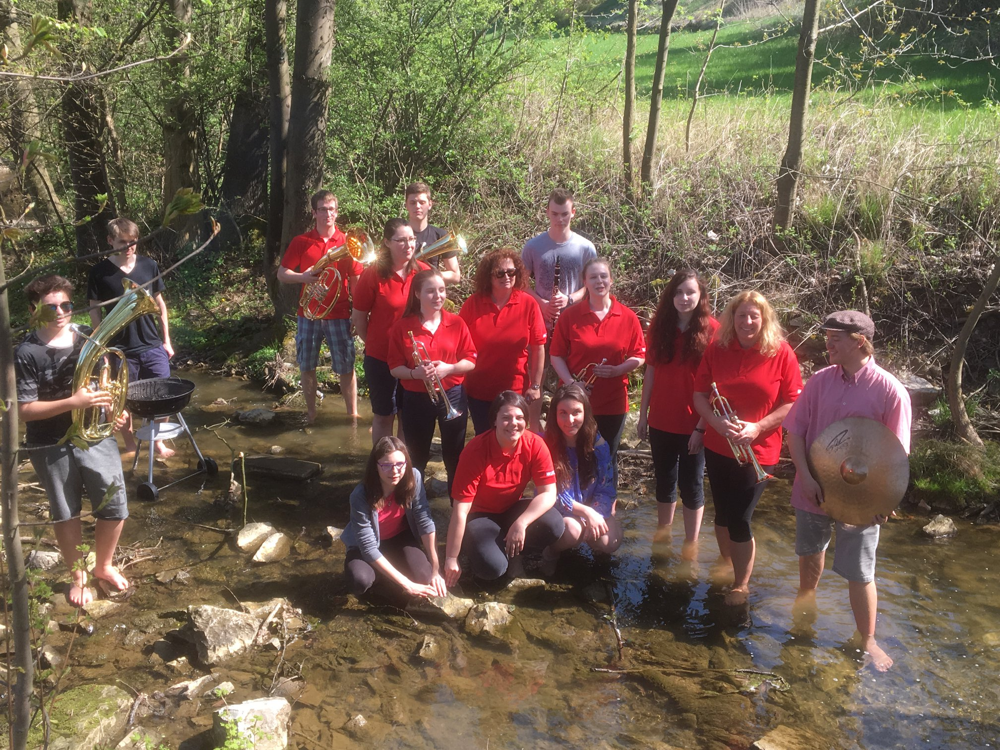
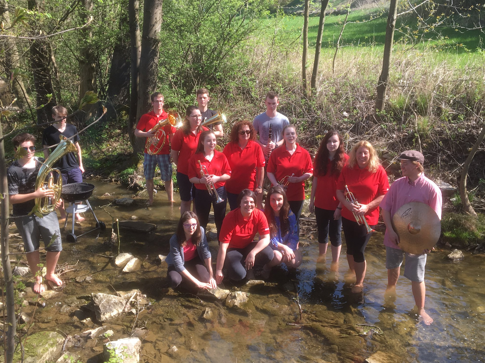

 
 
 Ziel
Traditionelle und sinfonische Blasmusik.
Vielfältigkeit steht für uns an erster Stelle. Als junges Blasorchester aus dem Hummelgau pflegen wir unsere traditionsreiche, fränkische Musik. Unser Repertoire reicht außerdem von böhmisch-mährischer Blasmusik bis hin zu internationalen Standards und Evergreens. Voller Leidenschaft bieten wir unserem Publikum aber auch Filmmusik und „klassische“ Stücke dar. Wir freuen uns über neue Herausforderungen und nehmen uns allen möglichen Stilrichtungen an.
In unseren Gemeinden umrahmen wir kulturelle, kirchliche und private Veranstaltungen und geben diesen so einen besonderen Charakter. Besonders ehrgeizig bereiten wir uns auf unser Jahreskonzert vor, das immer am Sonntag nach Aschermittwoch in der Hummeltaler Schulturnhalle stattfindet. Dort präsentieren wir stolz unserem großartigen Publikum neue Stücke, die wir die vorangegangen Wochen mit viel Fleiß einstudiert haben.
Diese gemeinsame Vorbereitungs- und Probenzeit schweißt Jung und Alt, Anfänger und Fortgeschrittene auf einzigartige Weise zusammen. Wir sind immer auf der Suche nach neuen Mitgliedern und freuen uns darauf, mit ihnen die Leidenschaft zum gemeinsamen Musizieren zu teilen.
Der Vereinsvorstand und andere Posten
- 1. Vorsitzender
- Andreas Löhr
- 2. Vorsitzender
- Moritz Hacker
- Schriftführerin
- Nina Ahner
- Kassier
- Jannis Hagen
- Kassenprüfer
- Georg Birner, Richard Müller
- Beisitzer
- Bernd Hagen, Herbert Röder
- Jugendwart
- Mark-Robin Reißenweber
- Aktivensprecherinnen
- Linda Rattenberger, Anna Polster
- Notenwart
- Petra Summa, Christine Arneth
- Festausschuss
-
Brigitte Richter, Ria Löhr,
Waltraud Rödel